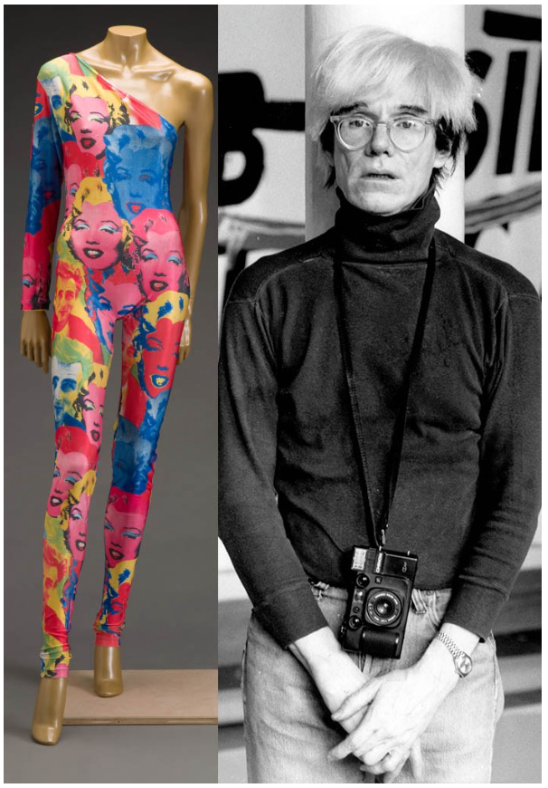
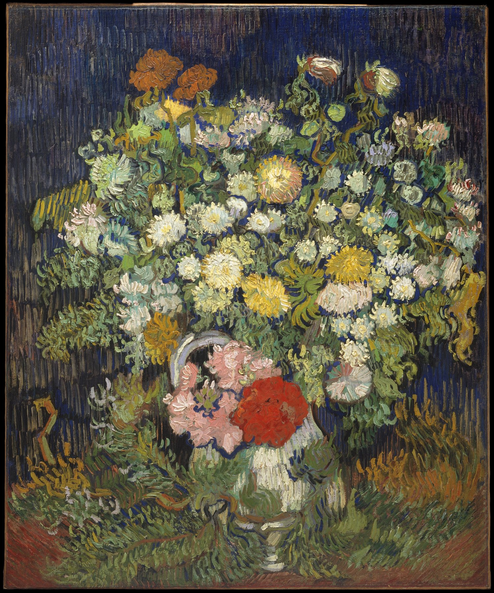
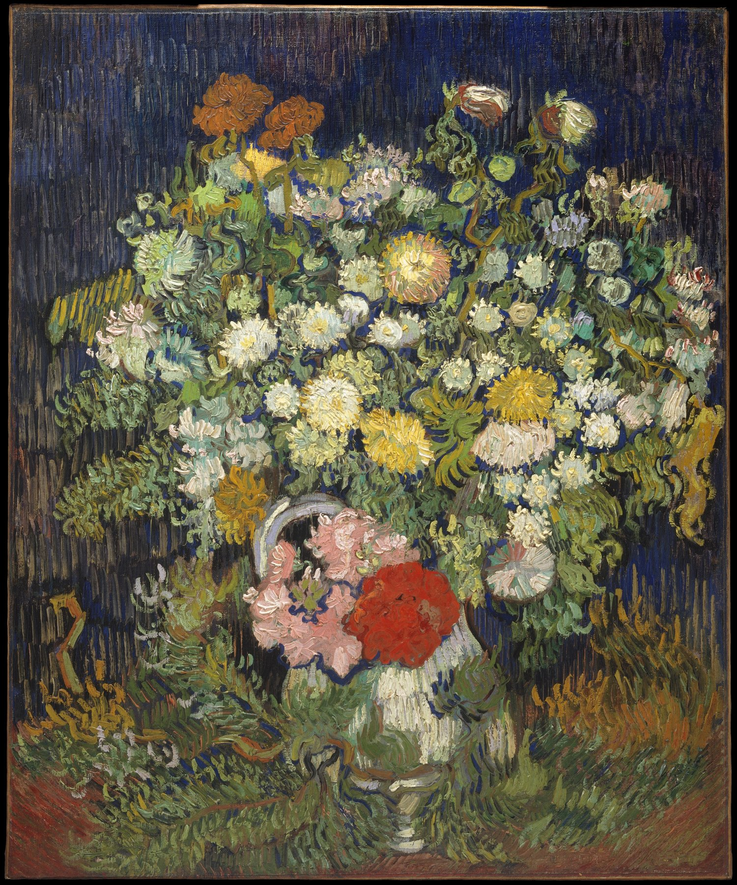
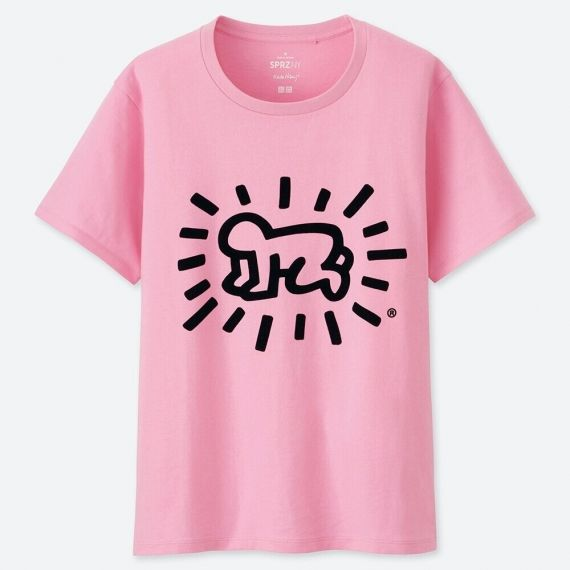
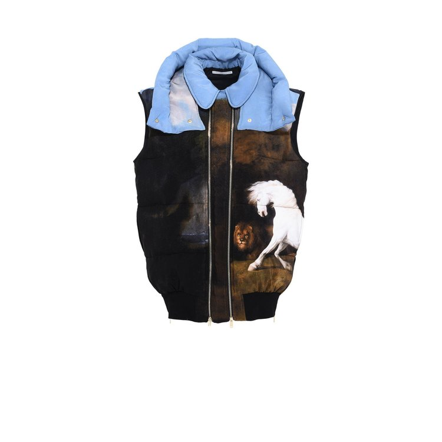
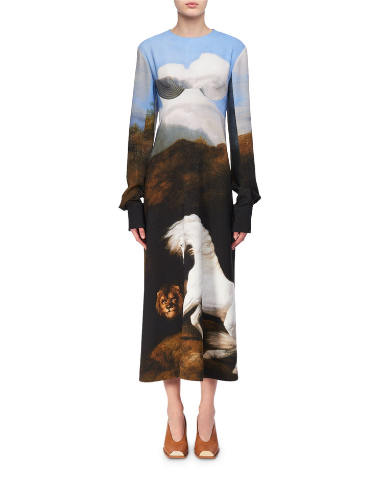
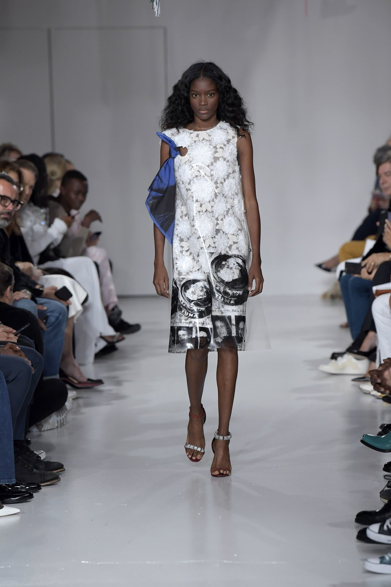
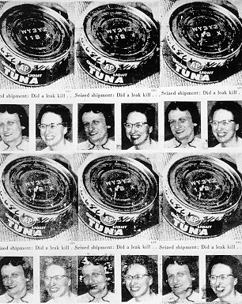

When Fashion Meets Art?
Art is taking a step away from its typical position on museum walls, all thanks to high-fashion adaptations. Indeed, contemporary designers have produced various garments inspired by painters of the past, from Impressionists to Mannerists. It’s important to note, however, that the clothes are not necessarily carbon copies of the authentic art; designers may choose to draw from particular aspects of the scene—including patterns, color scheme, and overall concept—and put their own spin on the works. See below for the top 21st-century references to legendary artists who continue to leave a lasting legacy through style.
Versace – Andy Warhol
Spring 1991. Gianni Versace creates a collection inspired by Andy Warhol’s colourful portraits of Marilyn Monroe and other famous people. Look at this fabulous total look – one shoulder tight jumpsuit.
Yves Saint Laurent + Mondrian
This is probably the most popular art-inspired dress. Believe it or not, this modern trapeze knit dress with recognizable colours and simple lines was designed in 1960. That is a total classic!
Louis Vuitton + Oscar-Claude Monet
Jeff Koons was definitely very into Monet’s paintings. We assume that he especially loves the “Water Lillies” painting as he literally has put it on the different types of LV bags.
Moschino’s Spring/Summer ‘18 Runway—Inspired by Van Gogh’s Bouquet of Flowers in a Vase (1890)
The designer transformed his models into walking works of art by dressing them in avant-garde, floral bouquets reminiscent of Van Gogh’s iconic painting. Indeed, the red bow tied around the waist of the garment parallels the single red rose in the artist’s work. The white, knee-high boots almost serve as vases themselves, featuring brightly-colored flowers positioned at the top. And this ithe many way we can incoprate art into our style.
 

Uniqlo SPRZ NY Keith Haring Graphic T-Shirts--Inspired by Keith Haring Doodles (2019)
The popular pop art/graffiti artist of the 1980s made a comeback by taking a turn into the world of fashion. The graphic tees give off a laid-back vibe, echoing the spirit of Haring’s street style inspiration while displaying his clever doodles.

Stella McCartney Stubbs Cassandra Dress and Melissa Vest—Inspired by George Stubbs’ A Horse Frightened by a Lion (1770)
Instead of a canvas, the designer decided to exhibit Stubbs’ majestic animals on modern silhouettes, including a vest and dress. Additionally, McCartney seemed to have brightened the artist’s image, giving its gloomy aura more of a daytime feel.
 
Calvin Klein’s Spring ‘18 Runway—Inspired by Andy Warhol’s Tunafish Disaster (1963)
Shift dresses and tank tops were upgraded with the addition of the pop artist’s classic silkscreen painting. Although Klein typically captures the American spirit through fringe and denim pieces, this particular collection presented a darker, more mysterious side of the country thanks to Warhol’s work.
 Comme des Garçons’ Spring/Summer ‘18 Runway—Inspired by Arcimboldo’s Vertumnus (1590-1591)
The 16th-century Mannerist painter was not afraid to step out of the box with his surreal portraits composed of fruits and vegetables—and Comme des Garçons’ approach was no different. The designer exhibited avant-garde dresses with Arcimboldo’s painting serving as the fabric and volumunous hairdos to match.


Popular Post